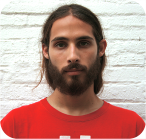

Frederic Font Corbera Technical engineer in Telecomunications, specialization in sound and image (Universitat Politècnica de Catalunya, Terrassa, 2007). Master in Sound and Music Computing (Universitat Pompeu Fabra, Barcelona, 2010). PhD in Sound and Music Computing (Universitat Pompeu Fabra, Barcelona, 2015). My research interests are in Sound and Music computing, audio processing and the semantic representation of audio content, motivated by the creative potential that online communities of users have through online sound sharing sites such as Freesound. My research is currently focused on how to properly describe audio content in order to improve its accessibility and future reuse in musically creative contexts. I focus my research on understanding audio annotations and other metadata provided by communities of users, and on how can we model different communities and extract knowledge that can be applied to the audio annotation process. I also work with audio signal processing and machine learning techniques to automatically annotate audio content. Oh, and I'm also Freesound's main web and API developer :) |
 |
| Publications: http://www.mtg.upf.edu/biblio/author/Font Linkedin: https://www.linkedin.com/in/fredericfont Freesound: http://www.freesound.org/people/frederic.font/ |